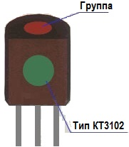
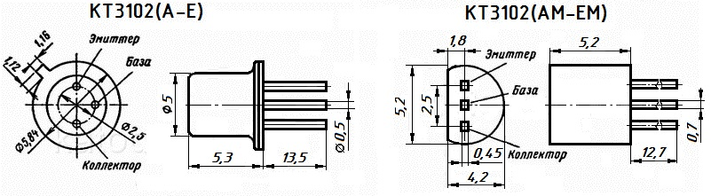

Транзистор КТ3102
Транзистор КТ3102 - эпитаксиально-планарный, n-p-n структуры, кремниевый, универсальный. Применяется в НЧ устройствах, требовательных к уровню шумов, а также в генераторных и усилительных СЧ и ВЧ устройствах. Является комплементарным по отношению к транзистору КТ3107.
Транзисторs КТ3102А, КТ3102Б, КТ3102В, КТ3102Г, КТ3102Д, КТ3102Е выпускаются в металлическом корпусе (рис. 1,а), КТ3102АМ, КТ3102БМ, КТ3102ВМ, КТ3102ГМ, КТ3102ДМ, КТ3102ЕМ - в пластмассовом корпусе (рис. 1,б).
Выводы - гибкие.
Маркируются транзисторы следующим образом:
- КТ3102А, КТ3102Б, КТ3102В, КТ3102Г, КТ3102Д, КТ3102Е - на боковой поверхности корпуса непосредственно надписью.
- КТ3102АМ, КТ3102БМ, КТ3102ВМ, КТ3102ГМ, КТ3102ДМ, КТ3102ЕМ - надписью на боковой поверхности корпуса или цветовой маркировкой: зелёная метка на боку корпуса и цветовая метка на торце корпуса указывающая на группу (табл. 1) .
Таблица 1
 |
КТ3102АМ | тёмно-красная (бордовая) |
| КТ3102БМ | жёлтая | |
| КТ3102ВМ | тёмно-зелёная (зеленая) | |
| КТ3102ГМ | голубая | |
| КТ3102ДМ | синяя | |
| КТ3102ЕМ | белая |
Все значения параметров, указанные далее для транзисторов КТ3102(А-Е) справедливы для соответствующих параметров транзисторов КТ3102(АМ-ЕМ).

Рис. 1 - Размеры и цоколевка транзисторов КТ3102
Электрические параметры транзистора КТ3102
Таблица 2
| Коэффициент передачи тока (статический) h21э (Uкб= 5 В, Iэ = 2 мА) | |
| Т = +25°C: | |
| КТ3102А | 100...250 |
| КТ3102Б, КТ3102В, КТ3102Д | 200...500 |
| КТ3102Г, КТ3102Е | 400...1000 |
| Т = +40°C: | |
| КТ3102А | 25...250 |
| КТ3102Б, КТ3102В, КТ3102Д | 50...500 |
| КТ3102Г, КТ3102Е | 100...1000 |
| Т = +85°C, не менее: | |
| КТ3102А | 100 |
| КТ3102Б, КТ3102В, КТ3102Д | 200 |
| КТ3102Г, КТ3102Е | 400 |
| Граничная частота коэффициента передачи тока Uкб= 5 В, Iэ = 10 мА, не менее: | |
| КТ3102А, КТ3102Б, КТ3102В, КТ3102Д | 300 МГц |
| КТ3102Г, КТ3102Е | 150 МГц |
| Постоянная времени цепи обратной связи на высокой частоте. Iэ = 10 мА, Uкб= 5 В, не более: |
100 пс |
| Коэффициент шума при Iэ = 0,2 мА, Uкб= 5 В, f = 1 кГц, не более: | |
| КТ3102А, КТ3102Б, КТ3102В, КТ3102Г | 10 дБ |
| КТ3102Д, КТ3102Е | 4 дБ |
| Граничное напряжение при Iэ = 10 мА, Iб = 0, не менее: | |
| КТ3102А, КТ3102Б | 30 В |
| КТ3102В, КТ3102Д | 20 В |
| КТ3102Г, КТ3102Е | 15 В |
| Ток коллектор-эмиттер (обратный), не более: | |
| КТ3102А, КТ3102Б при Uкэ = 50 В | 0,1 мкА |
| КТ3102В, КТ3102Д при Uкэ = 30 В | 0,05 мкА |
| КТ3102Г, КТ3102Е при Uкэ = 20 В | 0,05 мкА |
| Ток коллектора (обратный), не более: | |
| КТ3102А, КТ3102Б при Uкб = 50 В | |
| T = +25°C | 0,05...0,1 мкА |
| T = +40°C | 0,05 мкА |
| T = +85°C | 5 мкА |
| КТ3102В, КТ3102Д при Uкб = 30 В | |
| T = +25°C | 0,015...0,05 мкА |
| T = +40°C | 0,015 мкА |
| T = +85°C | 5 мкА |
| КТ3102Г, КТ3102Е при Uкб = 20 В | |
| T = +25°C | 0,015...0,05 мкА |
| T = +40°C | 0,015 мкА |
| T = +85°C | 5 мкА |
| Ток эмиттера (обратный). Uэб = 5 В, не более: | 10 мкА |
| Ёмкость коллекторного перехода. Uкб = 5 В, не более: | 6 пФ |
| Напряжение коллектор-база (постоянное), Uкб | |
| КТ3102А, КТ3102Б | 50 В |
| КТ3102В, КТ3102Д | 30 В |
| КТ3102Г, КТ3102Е | 20 В |
| Напряжение коллектор-эмиттер (постоянное), Uкэ: | |
| КТ3102А, КТ3102Б | 50 В |
| КТ3102В, КТ3102Д | 30 В |
| КТ3102Г, КТ3102Е | 20 В |
| Постоянное напряжение эмиттер-база | 5 В |
| Ток коллектора (постоянный ), Iк max | 100 мА |
| Ток коллектора (импульсный) Iк max и (при tи ≤ 40 мкс, Q ≥ 500) | 200 мА |
| Рассеиваемая мощность коллектора (постоянная) при T = -40 ... +25°C, Pк max(т) | 250 мВт |
| Рабочая температура (окружающей среды) | -40 ... +85°C |
Таблица 3
| Наименование | Uкб0 и, В | Uкэ0 и, В | h21э | Iкбо, мкА | fгр, МГц | Кш, Дб |
|---|---|---|---|---|---|---|
| КТ3102А | 50 | 50 | 100-200 | 0,05 | 150 | 10 |
| КТ3102Б | 50 | 50 | 200-500 | 0,05 | 150 | 10 |
| КТ3102В | 30 | 30 | 200-500 | 0,015 | 150 | 10 |
| КТ3102Г | 20 | 20 | 400-1000 | 0,015 | 150 | 10 |
| КТ3102Д | 30 | 30 | 200-500 | 0,015 | 150 | 4 |
| КТ3102Е | 20 | 20 | 400-1000 | 0,015 | 150 | 4 |
| КТ3102Ж | 20 | 20 | 100-250 | 0,05 | 150 | — |
| КТ3102И | 20 | 20 | 200-500 | 0,05 | 150 | — |
| КТ3102К | 20 | 20 | 200-500 | 0,015 | 150 | — |
| КТ3102АМ | 50 | 50 | 100-200 | 0,05 | 150 | 10 |
| КТ3102БМ | 50 | 50 | 200-500 | 0,05 | 150 | 10 |
| КТ3102ВМ | 30 | 30 | 200-500 | 0,015 | 150 | 10 |
| КТ3102ГМ | 20 | 20 | 400-1000 | 0,015 | 150 | 10 |
| КТ3102ДМ | 30 | 30 | 200-500 | 0,015 | 150 | 4 |
| КТ3102ЕМ | 20 | 20 | 400-1000 | 0,015 | 150 | 4 |
| КТ3102ЖМ | 20 | 20 | 100-250 | 0,05 | 150 | — |
| КТ3102ИМ | 20 | 20 | 200-500 | 0,05 | 150 | — |
| КТ3102КМ | 20 | 20 | 200-500 | 0,015 | 150 | — |